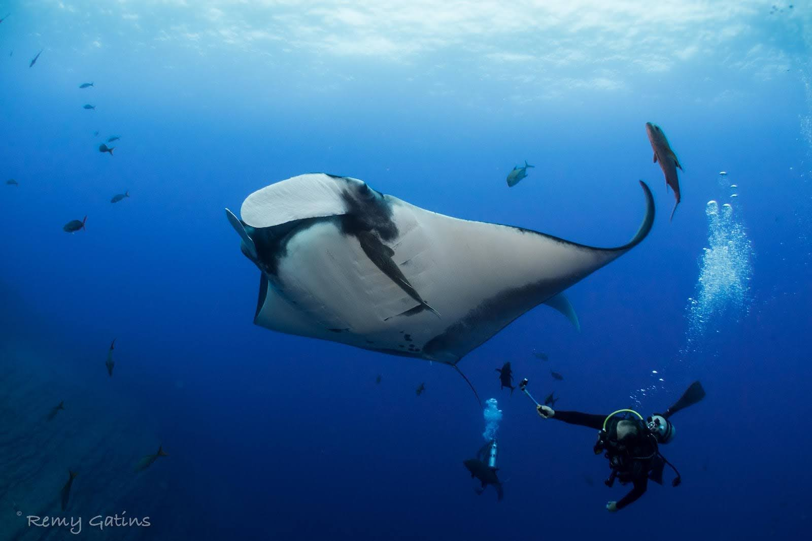

Handbook
Shared Seas Lab Handbook

Last updated: December 2025
Parts of this manual are adapted with permission from other labs including Dr. Holly Jones, Northern Illinois University, Dr. Erika Zavaleta, UCSC, and Dr. Don Croll, UCSC
Lab Philosophy
Mission: The Shared Seas Lab produces rigorous interdisciplinary science that enables collective action to sustain the ocean and its rich biodiversity, while supporting the communities that depend on it. We partner with fishers, policymakers, scientists, and coastal communities around the world to generate actionable knowledge, inform decisions, and foster cooperation across diverse stakeholders. Our goal is to transform complex ocean challenges into shared solutions that balance human well-being with the health of marine ecosystems.
Vision: We envision a future where ocean resources are sustainably shared, conflicts are transformed into cooperation, and both marine ecosystems and human communities can flourish together. We also strive to create a respectful, stimulating, challenging, and enjoyable academic environment that fosters diverse perspectives.
Expectations of Advisor
As advisor, Mel will set aside time to help lab members choose research topics and questions, design projects to pursue those questions, and help them pursue extramural funding for their research projects. She will provide career-related advice and, if asked, other types of advice. She will endeavor to talk about student career goals, and identify potential collaborators to help students achieve their research objectives and career goals. We will invest heavily into providing constructive feedback on manuscripts, posters, proposals, and presentations about student research. We strive to conduct productive lab meetings where lab members get feedback from all lab members on research and job application materials. We will create and maintain a safe and secure working environment.
Mel will aim to be physically present in the office at least four days per week.
Expectations of Students
The Shared Seas Lab is a collaborative, interdisciplinary research environment grounded in rigor, respect, and shared responsibility. All students are expected to contribute meaningfully to the intellectual life of the lab, support one another’s growth, and uphold high standards of scholarship, professionalism, and integrity.
Beyond individual meetings, lab meetings, and class times, there are no set work hours for our lab, but students are encouraged to be physically present in the lab at least three days per week.
General Expectations (all graduate students)
All students in the lab are expected to:
- Engage actively in research related to the lab’s core themes, including marine social–ecological systems, fisheries governance, and human–ocean interactions.
- Maintain regular communication with the PI, including scheduled meetings and timely updates on progress, challenges, and timelines.
- Participate in lab meetings, workshops, and collaborative activities, and come prepared to give and receive constructive feedback.
- Uphold ethical research practices, including proper data management, authorship standards, and respectful engagement with communities and collaborators.
- Contribute to a positive lab culture that values inclusivity, curiosity, mutual respect, and shared learning.
Individual Development Plan (IDP)
All students are required to maintain an Individual Development Plan (IDP), updated at least annually in September. The IDP should outline:
- Short- and long-term research goals
- Skill development goals (e.g., methods, writing, teaching, communication)
- Professional development objectives (e.g., conferences, fellowships, career exploration)
- Planned timelines and milestones
The IDP will be reviewed during annual check-ins and used to guide mentoring, expectations, and resource allocation.
Master’s Students (MS)
Master’s students are expected to develop strong foundations in research design, analysis, and scholarly communication.
Key expectations include:
- Completing a clearly defined research project aligned with lab priorities.
- Leading at least one publishable manuscript submitted for publication by the end of the degree.
- Presenting research at lab meetings and at least one conference or workshop.
- Demonstrating steady progress toward degree milestones (proposal, data collection, analysis, and writing).
Doctoral Students (PhD)
PhD students are expected to develop into independent researchers and leaders in their field.
Key expectations include:
- Producing at least three peer-reviewed papers submitted for publication during the PhD with the student serving as lead author.
- Designing and leading an original research agenda that contributes novel theoretical, empirical, or methodological insights.
- Actively seeking external funding opportunities (e.g., fellowships, grants).
- Contributing to mentoring undergraduate or master’s students when appropriate.
- Engaging in professional development, including teaching, conference presentations, and interdisciplinary collaboration.
Equity, Diversity, and Belonging
Science is a team endeavor. Our work is stronger and more effective when carried out by a diverse group of practitioners and perspectives from around the world. We will admit and sustain a diversity of students. Especially students that, in global conservation, are underrepresented and with marginalized racial, ethnic, gender, and socioeconomic backgrounds. We are committed to guiding these students through the meaningful completion of their graduate degree, and mentoring them through a thriving career in conservation. Our lab is specifically committed to recruiting and supporting international graduate students.
The lab is committed to equitable practices including:
Establishing clear expectations: as outlined in this document that includes lab culture and norms, scientific norms, and expectations of inclusion.
Cultivating a positive climate: Establish workplace norms and practices that are respectful, supportive, communicative, inclusive, and timely. We adhere to the University of Massachusetts Dartmouth’s Community Standards.
Dismantling biases related to gender, ethnicity, race, disability, and other marginalized identities: Pursue opportunities for improvement, and seek training and foster practices from other resources to improve individual and group interactions.
Tailoring mentorship: Adapt the advisee-advisor relationship to individual needs related to identity, career goals, and interests. This includes anticipating the unique needs of different students, including cultural and socioeconomic backgrounds.
Advocating for equity: Push for inclusive, equitable practices, including communicating and sharing research and programs focused on equity and inclusion. We support living wages for graduate student employees and equitable examination processes.
Building a welcoming and inclusive space: during lab meetings and lab discussions. We strive to ensure that all members feel comfortable speaking up.
Including diverse voices: Include underrepresented scientific voices and perspectives in lab reading materials and discussion, including research on the intersection of conservation, fisheries, and equity, and strive to include non-white/Eurocentric voices.
Cultivating lab community: Invite members to share personal stories, experiences, and backgrounds to build a strong lab community, and hold regular informal social gatherings.
Valuing feedback: Identifying and communicating when our lab goals are not met. This includes an annual formal avenue for constructive advisor, student, and lab feedback as well as a dedicated lab meeting at the end of Winter quarter to discuss our progress towards equitable culture/practices.
Revising and revisiting: Read and revise this document annually, at the beginning of each academic year.
Lab Principles
The Shared Seas Lab is grounded in the belief that how we do our work matters as much as the outcomes. Our research, collaborations, and daily practices are guided by the following principles:
- Minimize environmental impact: Choose low-impact food and travel options whenever possible; all lab-funded food will be plant-based.
- Avoid unnecessary harm to animals: Do not tag, sample, handle, or otherwise disturb animals unless it is scientifically justified, approved through appropriate permits, and cannot be avoided through non-invasive methods.
- Use ethical research practices: Follow all approved protocols (e.g. IRB approval for human subjects research; see forms in the shared drive), obtain informed consent, and ensure research activities are not extractive or harmful to participating communities.
- Compensate labor fairly: Pay research participants, community collaborators, and student workers fairly; do not rely on unpaid labor for core research activities.
- Respect people and communities: Engage collaborators with transparency, reciprocity, and cultural humility; honor local knowledge and time commitments.
- Maintain a culture of care and accountability: Communicate openly, respect boundaries, and address concerns or conflicts directly and constructively.
Ethics and Conduct
We expect lab members to adhere to the highest standards of ethics in data collection, reporting, and dissemination of research. These ethical expectations are articulated in the University of Massachusetts Dartmouth Code of Student Conduct and Principles of Employee Conduct. Our lab adheres to the UMass Dartmouth non-discrimination and harassment policies and we are committed to maintaining a community where all individuals can work together in an atmosphere free of violence, harassment, discrimination, exploitation, or intimidation. In addition to required training, all lab members should complete a FieldFutures harassment prevention training, especially if they conduct fieldwork.
Within your research and professional work, we also expect lab members to show high levels of respect, responsibility, and standards of ethics to all the people, species, and systems that intersect with your research. This includes colleagues, communities, assistants, technicians, funders, taxpayers, and end users of your results.
When lab members work with collaborators, pursue outreach opportunities, or travel for work, they are representing our lab and are expected to act accordingly. Lab members working in different states or countries should commit to spending time learning the cultures and customs of the places in which they work. This includes developing a cultural awareness and respect of the local social norms (including professional and interpersonal behavior), and remembering that you are a guest in that community. For professional collaborators, maintaining good relationships is of utmost importance. Proactive and cordial communication helps achieve this. If any lab member is encountering challenges with respect to collaborators, they should speak to Mel immediately before acting or reacting.
Team Environment
Our lab (and science generally) is collaborative, not competitive. Lab members can help create a safe, positive, welcoming atmosphere for all lab members. Lab members are expected to mentor, peer mentor, and academically support other members as time and work permits (e.g. teaching techniques, R/statistics, field work, lab work, input on presentations, manuscripts, job materials, etc.).
Professionalism
We want everyone in the lab to act in a professional, but fun, manner. We are trying to save the world, so we should show up and be on time to lab meetings, classes, and field work obligations. We are trying to bring out the best in everyone on our team, and we should wait our turn to speak in meetings, not interrupt, and encourage others to listen to all voices during meetings and interactions. Lab members should come to lab meetings prepared, having read the material to be discussed. Lab members should disseminate lab meeting materials early enough for people to come prepared.
We pride ourselves on the highest quality academic publications and communications. To assure this, we strongly encourage students to have proposals, publications, posters, and talks reviewed by advisors, co-authors, outside advisors, and labmates. It is critical that lab members commit to getting documents to advisors and other collaborators in a timely manner. As a suggestion, at least five business days are helpful to turn around documents to be reviewed, ideally more. That said, last minute requests will seldom be turned aside. Lab members should strategize with advisors about sufficient timelines for productive reviews, but it is a good idea to plan on having a first draft of thesis/dissertation/grant proposals to advisors 5-6 weeks before they are due (to either the grantor or the committee), to allow for multiple iterations of feedback. It is most efficient to do “round robin” (sequential reviews) of manuscripts rather than sending a manuscript out to all collaborators at the same time for feedback. This takes more time, but leads to better and more efficient improvement in the document. For all professional submissions (papers, posters, talks) it is essential that you provide all co-authors the opportunity to comment (or decline co-authorship).
Research
All lab members should commit to producing meaningful, novel contributions to science, marine conservation science, and (hopefully) conservation application.
We expect students to work on their research continuously from the beginning of their career in the lab. Lab members are encouraged to present their research at scientific meetings and expected to publish their findings in appropriate scholarly journals in a timely manner. Discuss a timeline for publications with us early and often.
Communication
The best and preferred way for lab members to communicate is through email. Lab members are encouraged to use this email to share interesting resources, work, and news. However, if something is urgent, lab members should feel free to text or call Mel; if she doesn’t answer, she will try to return the message in a timely manner.
Please ensure the subject lines of emails are descriptive of the subject (i.e. please don’t reply to an email thread about a topic with a different subject), and that if you are requesting something Mel, please provide a deadline. Importantly, do not hesitate to send reminder emails as due dates approach. When she is working from home or outside business hours, you can also always reach Mel via cell phone. In the spirit of work-life balance, please reserve communication outside business hours for emergencies.
If you want to set up an in person/virtual meeting, please check our calendars (Mel’s is available to see busy/free times) and suggest several times/days that would work for you. Once a date/time is agreed upon, immediately send an Outlook calendar invite for 30 minutes or one hour, depending on your needs. If a virtual meeting is being arranged, also send a Zoom or Teams invite.
Mel’s or is always open, figuratively and literally. At work, when we are available for people to drop by, Mel’s door is open. Feel free to come talk to her if there’s something you want to talk about or need that can’t wait for our meeting.
Advisor Meetings
Our lab policy is to have regular meetings with all lab members. The expectation is for students to prepare for, run and take charge of the meetings. Regular, weekly or biweekly meetings are the best way to commit to continuous progress and feedback on your work. Please keep the following in mind about these meetings:
- As much as possible try to schedule your meetings within the allocated time slots for graduate students
- It is good practice to send a reminder about the meeting the day before along with an attached agenda
- If you are scheduling outside of the regular meeting slot, send an electronic calendar invite with e-meeting link (if appropriate)
- Have an agenda (preferably Powerpoint) with updates and questions, so everyone can be efficient and get to everything we need to talk about
- Meetings are 30 min - 1 hour long. If you need more time than that, feel free to request a longer meeting time.
- Make sure meetings and virtual meeting invitations are on all attendees’ calendars
- If you don’t have anything to talk about or to update, feel free to cancel the meeting and give as much notice as possible.
- If you want Mel to come prepared to the meeting having read something, send it to her at least 3 business days before the meeting., with a reminder 1 day before the meeting
- Show up to the meetings on time.
Lab Meetings
We will start each academic year with a lab gathering (dinner, retreat) and will determine a regular meeting time to connect outside of the lab environment. Generally, lab meetings are held once per week. Participation is required and you are expected to come prepared, having read that week’s paper/assignment. Snacks are encouraged when meetings are held in-person and the person who is leading the lab meeting is in charge or arranging snacks.
During lab meetings, participants are encouraged to make space for other voices in addition to taking space. Consider starting discussions with round robins to elevate everyone’s voice (e.g. everyone names one thing about the presentation/paper they appreciated). Be mindful of interrupting people, both in terms of making space and respecting the speaker.
Date and time of meeting will be determined prior to the start of the quarter (or during the first week). In general, lab meetings are held in the OHB library and participation via zoom is possible. The first meeting each fall quarter will review the handbook and point out resources for new students. New and returning lab members are encouraged to schedule a social get together early in the quarter to build community.
Topics for early quarter lab meetings could include:
- Filling out Individual Development Plans
- Going over and updating the Lab Handbook
- Familiarizing ourselves with new members’ work
- Best practices for data management
- Grant submission process
- Co-writing a paper
- Learning a skill together.
Publishing
For our lab, Master’s students are required to have one publication submitted to a peer-reviewed journal before signing off on their thesis and doctoral students are required to have all publications submitted to a peer-reviewed journal before signing off on their dissertation. Students should attempt to fundraise for publishing costs, as the lab does not have specific resources to cover publication costs.
Oral Presentations
Our lab prides itself on giving great talks. It is strongly encouraged that you give a practice presentation during a lab meeting (or other agreed upon time) at least 1-2 weeks prior (and ideally more) to your presentation date. When presenting a practice talk, come with your slides prepared and practiced. Don’t forget to add slide numbers to your slides. It is helpful to go over the talk structure with your advisor prior to your presentation during the lab meeting. Constructive criticism is part of the process; don’t be afraid to give it and receive it!
Extramural Support
Financial support is formally outlined in the letter of acceptance to each individual student, which is viewed as a contract. In addition, we look to our students to search for and identify additional support for themselves and for their research activities. This benefits students in the long run, as a track record of securing grants looks great on a resume!
We are committed to helping students hone these applications to make them as successful as possible. In many cases advisors are not aware of additional funding opportunities for graduate students (e.g. small grants, travel grants). Students are advised to join relevant listservs, ask the Graduate advisor, Graduate Division, and other students about further opportunities. You can also sign up for funding opportunity alerts through the Office of Research Administration funding tools like GrantForward.
All lab members are expected to create research proposals and submit them to funding agencies, with guidance from your advisor. Learning to write a grant is one of the most important skills lab members can gain, no matter what their chosen career is.
Some grants need to be submitted through the University. If the grant instructions indicate that the documents need to be signed by an official University representative, then the grant needs to be processed through the Office of Research Administration. The official University representative is not Mel, it is a grant officer in ORA. OSP has very strict deadlines, they need to be notified of the proposal well before the deadline. Please work with Mel well before the deadline to get your grant proposal into the system.
When working on a budget, remember to add in funds for publication costs if applicable.
Letters of Support/Recommendation
If possible, submit your request for a letter to Mel at least two weeks prior to the deadline, but last-minute requests will seldom be denied. When you ask for the letter, attach your CV and a link to the opportunity you’re applying for. To aid with the process, you can send a draft letter and/or main points you want emphasized ahead of time. You are encouraged to follow up with Mel a week before the deadline (and again two days prior) to make sure they remember.
Lab Space
Office interactions are important and encouraged, but they must be balanced with quiet working times. Each lab cohort may have different preferences, so each should agree to, for example, quiet times and break times, to ensure people can interact and have quiet time as needed. Lab members are strongly encouraged to talk to one another about how best to make the lab a productive space.
Lab members should take ownership of the lab space and know that it is their responsibility to maintain it, and that they, as a team, have permission to arrange and decorate it to their liking (within reason). All lab members are expected to clean up messes in the lab, contribute to organizing it and keeping it clean, wash all their own dishes, and take turns watering the plants.
Each lab member has a dedicated desk space, small file cabinet and shelf space which they are free to personalize. An external computer monitor might be available. The lab should be locked with the lights off when no one is in it.
Data Storage, Management, and Sharing
Students are encouraged to maintain hard copies of their field and lab notes and store them in a safe and secure place. Without due diligence, electronically stored data may become unusable because of technological advances. Students are also encouraged to routinely backup their data and share it with collaborators as needed/appropriate. To ensure timely sharing of data, they should be copied from data sheets and put into an electronic form ASAP after returning from the field. Back up data daily when possible and always keep multiple copies of data. Back data up online on OneDrive, scan datasheets and put them online, and use a hard drive to back up data on your personal computer. Hard drives can be provided; ask Mel if you need one.
Wellbeing
We expect our students to work hard to realize their academic, conservation, and career goals. However, we also want students to maintain mental and physical health and come out of their graduate experience in the lab inspired, healthy, happy, and whole. To that end, students are encouraged to maintain hobbies and interests outside of their academic experience with the lab, as well as healthy relationships while pursuing the science they are excited about. We want you at a level that pushes you to be the best you can be (i.e. I’m uncomfortable but I can handle this), but not at a level that pushes you so hard you burn out or are unwell (i.e. I’m uncomfortable and I can’t maintain this level of obligation without harm to myself). If you are feeling overly stressed, depressed, harassed, or in need of counseling help, you are encouraged to contact the professional services offered at UMass Dartmouth for these issues. These services include:
UMass Dartmouth Counseling Center. The Counseling Center provides brief individual counseling, relationship counseling, group therapy, consultation, and urgent care services to the UMass Dartmouth community. To make an appointment, call (508)999-8648, Monday - Friday, 9am-5pm. For after hours emergencies, call our crisis line at (508)910-HELP.
UMass Dartmouth Office of Civil Rights
Lab members may wish to work or consult in jobs outside the lab in addition to their coursework, research, outreach, and/or teaching responsibilities in the lab. It is important to understand that the SMAST graduate program has been designed for students to receive support to allow for concentrated focus on their research, learning, and teaching. However, we recognize that this support may be insufficient, or students may want to gain other experiences outside of SMAST. This may be feasible if students prioritize and meet their graduate study obligations, however managing an outside professional commitment can become overwhelming. If outside work is interfering with the ability to meet graduate responsibilities, a reevaluation of priorities and financial options may be necessary.
Personal emergencies
If you are a member of the lab for multiple years, it’s likely you will experience some sort of personal emergency. In these times (as in all others), the top priority is taking care of yourself and dealing with the situation. Let us know how we can best help you deal with your situation; we are dedicated to arranging academic obligations so that you can focus upon your emergency. In addition, your fellow lab mates are generally eager to help in any way you feel comfortable.
Offboarding
Before you leave the lab, be sure to:
- Clear out your desk and surrounding area completely
- Return any SSL or SMAST property (laptops, hard drives, monitors etc.)
- Discard your samples unless you’ve talked to Mel about storing them
- Discuss a timeline for publication with Mel if you have remaining research to publish
- Turn in your keys